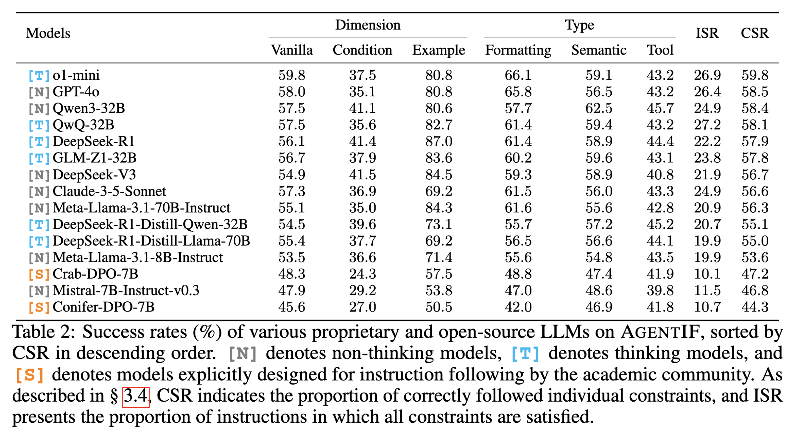

Constraint Success Rate (CSR) measures the proportion of individual constraints that are correctly satisfied by the model's response. Instruction Success Rate (ISR) measures the proportion of instructions for which all constraints are satisfied.
So far we have evaluated small open-weight models (2B–4B) under the new setting; results for larger open-weight and proprietary models are being evaluated and will be released soon.
Small open-weight models — current setting
Judge gpt-5.6-luna; every (model, mode) is sampled 3 times independently with the
vendor-recommended decoding parameters. [T] = thinking mode, [N] = non-thinking mode.
ISR and CSR are mean ± sample std over the 3 runs (sorted by ISR by default); the remaining columns are the
mean CSR per constraint presentation type (Vanilla / Condition / Example) and per constraint type
(Formatting / Semantic / Tool). Click any column header to sort; click a model to see its exact vLLM flags
and sampling parameters.
| Overall | Presentation Type | Constraint Type | |||||||
|---|---|---|---|---|---|---|---|---|---|
| # | Model | ISR | CSR | Vanilla | Condition | Example | Formatting | Semantic | Tool |
| [T]gemma-nemotron-4b-bf16-ea | 26.17 ± 0.99 | 58.66 ± 0.26 | 59.09 | 41.35 | 75.96 | 60.66 | 59.96 | 48.41 | |
| [T]granite-4.2-3b | 25.84 ± 1.27 | 56.12 ± 0.45 | 59.13 | 36.73 | 53.60 | 57.40 | 55.91 | 53.30 | |
| [N]gemma-4-E4B-it | 25.74 ± 0.28 | 60.06 ± 0.89 | 61.07 | 46.03 | 69.37 | 61.36 | 62.65 | 46.84 | |
| [N]gemma-nemotron-4b-bf16-ea | 24.94 ± 0.70 | 59.21 ± 0.51 | 60.14 | 43.81 | 70.68 | 60.85 | 61.66 | 45.85 | |
| [T]Qwen3.5-4B | 24.85 ± 0.43 | 59.21 ± 0.78 | 59.64 | 43.55 | 74.41 | 60.23 | 60.75 | 50.78 | |
| [T]gemma-4-E2B-it | 24.28 ± 1.34 | 58.67 ± 0.23 | 59.74 | 43.59 | 68.26 | 61.04 | 59.24 | 49.81 | |
| [T]gemma-4-E4B-it | 24.14 ± 0.91 | 58.71 ± 0.36 | 58.90 | 43.14 | 75.70 | 58.67 | 60.88 | 51.18 | |
| [N]gemma-4-E2B-it | 23.81 ± 1.27 | 58.08 ± 0.60 | 59.63 | 42.40 | 65.36 | 59.22 | 60.43 | 46.31 | |
| [N]Qwen3.5-4B | 22.82 ± 0.91 | 58.92 ± 0.48 | 59.67 | 44.41 | 70.15 | 59.53 | 61.12 | 49.30 | |
| [N]NVIDIA-Nemotron-3-Nano-4B | 22.77 ± 0.28 | 56.07 ± 0.21 | 57.03 | 35.70 | 71.31 | 63.95 | 52.07 | 47.34 | |
| [T]NVIDIA-Nemotron-3-Nano-4B | 22.68 ± 0.43 | 53.85 ± 0.27 | 55.87 | 35.33 | 58.19 | 57.73 | 51.09 | 52.74 | |
| [N]granite-4.2-3b | 21.97 ± 0.92 | 53.42 ± 0.37 | 56.49 | 36.12 | 49.05 | 51.43 | 55.57 | 51.59 | |
| [T]Ministral-3-3B-Reasoning-2512 | 19.94 ± 0.62 | 52.49 ± 0.35 | 53.44 | 35.20 | 64.22 | 52.52 | 52.92 | 50.87 | |
| [T]Qwen3.5-2B | 19.53 ± 0.87 | 53.86 ± 0.06 | 55.88 | 38.88 | 56.06 | 57.18 | 53.75 | 44.67 | |
| [T]MiniCPM5-2B | 19.52 ± 0.28 | 51.98 ± 0.37 | 53.48 | 37.51 | 56.30 | 52.96 | 52.55 | 47.16 | |
| [N]Ministral-3-3B-Instruct-2512 | 18.86 ± 0.94 | 54.62 ± 0.26 | 55.64 | 41.45 | 62.32 | 50.31 | 58.53 | 53.09 | |
| [N]MiniCPM5-2B | 18.25 ± 0.14 | 50.81 ± 0.70 | 53.28 | 37.29 | 46.07 | 51.88 | 51.18 | 46.50 | |
| [T]Hunyuan-4B-Instruct | 18.15 ± 0.36 | 53.08 ± 0.11 | 54.40 | 34.55 | 63.00 | 56.20 | 53.43 | 42.74 | |
| [N]Qwen3.5-2B | 15.94 ± 0.71 | 49.28 ± 0.41 | 51.98 | 33.76 | 46.40 | 51.13 | 48.38 | 47.19 | |
| [N]Hunyuan-4B-Instruct | 10.23 ± 0.43 | 44.08 ± 0.13 | 46.36 | 29.35 | 42.24 | 38.40 | 49.52 | 41.05 | |
Success rates (%) on AgentIF under the current setting.
The two Ministral checkpoints are single-mode models (Instruct = non-thinking, Reasoning = thinking).
Empty or failed responses are scored as failing every constraint. The exact vLLM flags and sampling
parameters of every row are the committed
configs/<model>.yaml files.
Last Update: 2026-10-09
Legacy results — original setting (judge gpt-4o-2024-11-20, single greedy run)
Produced with the original protocol: judge gpt-4o-2024-11-20 with temperature 0, one greedy run
per model, API models called with their default mode. Kept for reference only;
not comparable with the table above. Click a model to download its full results, or browse the
complete results repository.
| Presentation Type | Constraint Type | Overall | |||||||
|---|---|---|---|---|---|---|---|---|---|
| # | Model | Vanilla | Condition | Example | Formatting | Semantic | Tool | ISR | CSR |
| [T]o1-mini | 59.8 | 37.5 | 80.8 | 66.1 | 59.1 | 43.2 | 26.9 | 59.8 | |
| [N]GPT-4o | 58.0 | 35.1 | 80.8 | 65.8 | 56.5 | 43.2 | 26.4 | 58.5 | |
| [N]Qwen3-32B | 57.5 | 41.1 | 80.6 | 57.7 | 62.5 | 45.7 | 24.9 | 58.4 | |
| [T]QwQ-32B | 57.5 | 35.6 | 82.7 | 61.4 | 59.4 | 43.2 | 27.2 | 58.1 | |
| [T]DeepSeek-R1 | 56.1 | 41.4 | 87.0 | 61.4 | 58.9 | 44.4 | 22.2 | 57.9 | |
| [T]GLM-Z1-32B | 56.7 | 37.9 | 83.6 | 60.2 | 59.6 | 43.1 | 23.8 | 57.8 | |
| [N]DeepSeek-V3 | 54.9 | 41.5 | 84.5 | 59.3 | 58.9 | 40.8 | 21.9 | 56.7 | |
| [N]Claude-3-5-Sonnet | 57.3 | 36.9 | 69.2 | 61.5 | 56.0 | 43.3 | 24.9 | 56.6 | |
| [N]Meta-Llama-3.1-70B-Instruct | 55.1 | 35.0 | 84.3 | 61.6 | 55.6 | 42.8 | 20.9 | 56.3 | |
| [T]DeepSeek-R1-Distill-Qwen-32B | 54.5 | 39.6 | 73.1 | 55.7 | 57.2 | 45.2 | 20.7 | 55.1 | |
| [T]DeepSeek-R1-Distill-Llama-70B | 55.4 | 37.7 | 69.2 | 56.5 | 56.6 | 44.1 | 19.9 | 55.0 | |
| [N]Meta-Llama-3.1-8B-Instruct | 53.5 | 36.6 | 71.4 | 55.6 | 54.8 | 43.5 | 19.9 | 53.6 | |
| [S]Crab-DPO-7B | 48.3 | 24.3 | 57.5 | 48.8 | 47.4 | 41.9 | 10.1 | 47.2 | |
| [N]Mistral-7B-Instruct-v0.3 | 47.9 | 29.2 | 53.8 | 47.0 | 48.6 | 39.8 | 11.5 | 46.8 | |
| [S]Conifer-DPO-7B | 45.6 | 27.0 | 50.5 | 42.0 | 46.9 | 41.8 | 10.7 | 44.3 | |
Success rates (%) of various proprietary and open-source LLMs on AgentIF under the original setting, sorted by CSR in descending order by default. [N] denotes non-thinking models, [T] denotes thinking models, and [S] denotes models explicitly designed for instruction following by the academic community. Last update of this table: 2025-06-10.
Performance across constraint categories reported in the paper (original setting):
